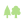

<!doctype html>
<html lang="en">
    <head>
        <meta charset="utf-8">
        <meta http-equiv="X-UA-Compatible" content="IE=edge">
        <meta name="viewport" content="initial-scale=1,user-scalable=no,maximum-scale=1,width=device-width">
        <meta name="mobile-web-app-capable" content="yes">
        <meta name="apple-mobile-web-app-capable" content="yes">
        <link rel="stylesheet" href="css/leaflet.css">
        <link rel="stylesheet" href="css/L.Control.Layers.Tree.css">
        <link rel="stylesheet" href="css/L.Control.Locate.min.css">
        <link rel="stylesheet" href="css/qgis2web.css">
        <link rel="stylesheet" href="css/fontawesome-all.min.css">
        <link rel="stylesheet" href="css/MarkerCluster.css">
        <link rel="stylesheet" href="css/MarkerCluster.Default.css">
        <link rel="stylesheet" href="css/leaflet-measure.css">
        <style>
        html, body, #map {
            width: 100%;
            height: 100%;
            padding: 0;
            margin: 0;
        }
        </style>
        <title>GeoCaldesdeMontbui</title>
    </head>
    <body>
        <div id="map">
        </div>
        <script src="js/qgis2web_expressions.js"></script>
        <script src="js/leaflet.js"></script>
        <script src="js/L.Control.Layers.Tree.min.js"></script>
        <script src="js/L.Control.Locate.min.js"></script>
        <script src="js/leaflet.rotatedMarker.js"></script>
        <script src="js/leaflet.pattern.js"></script>
        <script src="js/leaflet-hash.js"></script>
        <script src="js/Autolinker.min.js"></script>
        <script src="js/rbush.min.js"></script>
        <script src="js/labelgun.min.js"></script>
        <script src="js/labels.js"></script>
        <script src="js/leaflet-measure.js"></script>
        <script src="js/leaflet.markercluster.js"></script>
        <script src="data/Zones_interes_1.js"></script>
        <script src="data/Rutes_2.js"></script>
        <script>
        var map = L.map('map', {
            zoomControl:false, maxZoom:28, minZoom:1
        }).fitBounds([[41.6268563147308,2.1093687213134507],[41.675649989010346,2.197000376715453]]);
        var hash = new L.Hash(map);
        map.attributionControl.setPrefix('<a href="https://github.com/tomchadwin/qgis2web" target="_blank">qgis2web</a> &middot; <a href="https://leafletjs.com" title="A JS library for interactive maps">Leaflet</a> &middot; <a href="https://qgis.org">QGIS</a>');
        var autolinker = new Autolinker({truncate: {length: 30, location: 'smart'}});
        // remove popup's row if "visible-with-data"
        function removeEmptyRowsFromPopupContent(content, feature) {
         var tempDiv = document.createElement('div');
         tempDiv.innerHTML = content;
         var rows = tempDiv.querySelectorAll('tr');
         for (var i = 0; i < rows.length; i++) {
             var td = rows[i].querySelector('td.visible-with-data');
             var key = td ? td.id : '';
             if (td && td.classList.contains('visible-with-data') && feature.properties[key] == null) {
                 rows[i].parentNode.removeChild(rows[i]);
             }
         }
         return tempDiv.innerHTML;
        }
        // add class to format popup if it contains media
		function addClassToPopupIfMedia(content, popup) {
			var tempDiv = document.createElement('div');
			tempDiv.innerHTML = content;
			if (tempDiv.querySelector('td img')) {
				popup._contentNode.classList.add('media');
					// Delay to force the redraw
					setTimeout(function() {
						popup.update();
					}, 10);
			} else {
				popup._contentNode.classList.remove('media');
			}
		}
        var title = new L.Control({'position':'topright'});
        title.onAdd = function (map) {
            this._div = L.DomUtil.create('div', 'info');
            this.update();
            return this._div;
        };
        title.update = function () {
            this._div.innerHTML = '<h2>GeoCaldesdeMontbui</h2>';
        };
        title.addTo(map);
        var abstract = new L.Control({'position':'topright'});
        abstract.onAdd = function (map) {
            this._div = L.DomUtil.create('div',
            'leaflet-control abstract');
            this._div.id = 'abstract'

                abstract.show();
                return this._div;
            };
            abstract.show = function () {
                this._div.classList.remove("abstract");
                this._div.classList.add("abstractUncollapsed");
                this._div.innerHTML = 'by INFRAESAN.COM';
        };
        abstract.addTo(map);
        var zoomControl = L.control.zoom({
            position: 'topleft'
        }).addTo(map);
        L.control.locate({locateOptions: {maxZoom: 19}}).addTo(map);
        var measureControl = new L.Control.Measure({
            position: 'topleft',
            primaryLengthUnit: 'meters',
            secondaryLengthUnit: 'kilometers',
            primaryAreaUnit: 'sqmeters',
            secondaryAreaUnit: 'hectares'
        });
        measureControl.addTo(map);
        document.getElementsByClassName('leaflet-control-measure-toggle')[0].innerHTML = '';
        document.getElementsByClassName('leaflet-control-measure-toggle')[0].className += ' fas fa-ruler';
        var bounds_group = new L.featureGroup([]);
        function setBounds() {
        }
        map.createPane('pane_GoogleSatellite_0');
        map.getPane('pane_GoogleSatellite_0').style.zIndex = 400;
        var layer_GoogleSatellite_0 = L.tileLayer('https://mt1.google.com/vt/lyrs=s&x={x}&y={y}&z={z}', {
            pane: 'pane_GoogleSatellite_0',
            opacity: 1.0,
            attribution: '<a href="https://www.google.at/permissions/geoguidelines/attr-guide.html">Map data ©2015 Google</a>',
            minZoom: 1,
            maxZoom: 28,
            minNativeZoom: 0,
            maxNativeZoom: 20
        });
        layer_GoogleSatellite_0;
        map.addLayer(layer_GoogleSatellite_0);
        function pop_Zones_interes_1(feature, layer) {
            var popupContent = '<table>\
                    <tr>\
                        <td colspan="2">' + (feature.properties['fid'] !== null ? autolinker.link(String(feature.properties['fid']).replace(/'/g, '\'').replace(/"/g, '&quot;').toLocaleString()) : '') + '</td>\
                    </tr>\
                    <tr>\
                        <td colspan="2">' + (feature.properties['Nom'] !== null ? autolinker.link(String(feature.properties['Nom']).replace(/'/g, '\'').replace(/"/g, '&quot;').toLocaleString()) : '') + '</td>\
                    </tr>\
                    <tr>\
                        <td colspan="2">' + (feature.properties['Localització'] !== null ? autolinker.link(String(feature.properties['Localització']).replace(/'/g, '\'').replace(/"/g, '&quot;').toLocaleString()) : '') + '</td>\
                    </tr>\
                    <tr>\
                        <td colspan="2">' + (feature.properties['Documentació'] !== null ? autolinker.link(String(feature.properties['Documentació']).replace(/'/g, '\'').replace(/"/g, '&quot;').toLocaleString()) : '') + '</td>\
                    </tr>\
                    <tr>\
                        <td colspan="2">' + (feature.properties['Tipus'] !== null ? autolinker.link(String(feature.properties['Tipus']).replace(/'/g, '\'').replace(/"/g, '&quot;').toLocaleString()) : '') + '</td>\
                    </tr>\
                </table>';
            var content = removeEmptyRowsFromPopupContent(popupContent, feature);
			layer.on('popupopen', function(e) {
				addClassToPopupIfMedia(content, e.popup);
			});
			layer.bindPopup(content, { maxHeight: 400 });
        }

        function style_Zones_interes_1_0(feature) {
            switch(String(feature.properties['Tipus'])) {
                case 'Arquitectònic':
                    return {
                pane: 'pane_Zones_interes_1',
        rotationAngle: 0.0,
        rotationOrigin: 'center center',
        icon: L.icon({
            iconUrl: 'markers/Zones_interes_1.svg',
            iconSize: [19.0, 19.0]
        }),
                interactive: true,
            }
                    break;
                default:
                    return {
                pane: 'pane_Zones_interes_1',
                radius: 4.0,
                opacity: 1,
                color: 'rgba(35,35,35,1.0)',
                dashArray: '',
                lineCap: 'butt',
                lineJoin: 'miter',
                weight: 1,
                fill: true,
                fillOpacity: 1,
                fillColor: 'rgba(240,83,224,1.0)',
                interactive: true,
            }
                    break;
                case 'Natura':
                    return {
                pane: 'pane_Zones_interes_1',
        rotationAngle: 0.0,
        rotationOrigin: 'center center',
        icon: L.icon({
            iconUrl: 'markers/Zones_interes_1.svg',
            iconSize: [19.0, 19.0]
        }),
                interactive: true,
            }
                    break;
            }
        }
        map.createPane('pane_Zones_interes_1');
        map.getPane('pane_Zones_interes_1').style.zIndex = 401;
        map.getPane('pane_Zones_interes_1').style['mix-blend-mode'] = 'normal';
        var layer_Zones_interes_1 = new L.geoJson(json_Zones_interes_1, {
            attribution: '',
            interactive: true,
            dataVar: 'json_Zones_interes_1',
            layerName: 'layer_Zones_interes_1',
            pane: 'pane_Zones_interes_1',
            onEachFeature: pop_Zones_interes_1,
            pointToLayer: function (feature, latlng) {
                var context = {
                    feature: feature,
                    variables: {}
                };
                return L.marker(latlng, style_Zones_interes_1_0(feature));
            },
        });
        var cluster_Zones_interes_1 = new L.MarkerClusterGroup({showCoverageOnHover: false,
            spiderfyDistanceMultiplier: 2});
        cluster_Zones_interes_1.addLayer(layer_Zones_interes_1);

        bounds_group.addLayer(layer_Zones_interes_1);
        cluster_Zones_interes_1.addTo(map);
        function pop_Rutes_2(feature, layer) {
            var popupContent = '<table>\
                    <tr>\
                        <td colspan="2">' + (feature.properties['fid'] !== null ? autolinker.link(String(feature.properties['fid']).replace(/'/g, '\'').replace(/"/g, '&quot;').toLocaleString()) : '') + '</td>\
                    </tr>\
                    <tr>\
                        <td colspan="2">' + (feature.properties['Nom'] !== null ? autolinker.link(String(feature.properties['Nom']).replace(/'/g, '\'').replace(/"/g, '&quot;').toLocaleString()) : '') + '</td>\
                    </tr>\
                    <tr>\
                        <td colspan="2">' + (feature.properties['Distància (Km)'] !== null ? autolinker.link(String(feature.properties['Distància (Km)']).replace(/'/g, '\'').replace(/"/g, '&quot;').toLocaleString()) : '') + '</td>\
                    </tr>\
                    <tr>\
                        <td colspan="2">' + (feature.properties['Temps'] !== null ? autolinker.link(String(feature.properties['Temps']).replace(/'/g, '\'').replace(/"/g, '&quot;').toLocaleString()) : '') + '</td>\
                    </tr>\
                    <tr>\
                        <td colspan="2">' + (feature.properties['Tipus'] !== null ? autolinker.link(String(feature.properties['Tipus']).replace(/'/g, '\'').replace(/"/g, '&quot;').toLocaleString()) : '') + '</td>\
                    </tr>\
                    <tr>\
                        <td colspan="2">' + (feature.properties['Modalitat'] !== null ? autolinker.link(String(feature.properties['Modalitat']).replace(/'/g, '\'').replace(/"/g, '&quot;').toLocaleString()) : '') + '</td>\
                    </tr>\
                    <tr>\
                        <td colspan="2">' + (feature.properties['Dificultat'] !== null ? autolinker.link(String(feature.properties['Dificultat']).replace(/'/g, '\'').replace(/"/g, '&quot;').toLocaleString()) : '') + '</td>\
                    </tr>\
                </table>';
            var content = removeEmptyRowsFromPopupContent(popupContent, feature);
			layer.on('popupopen', function(e) {
				addClassToPopupIfMedia(content, e.popup);
			});
			layer.bindPopup(content, { maxHeight: 400 });
        }

        function style_Rutes_2_0() {
            return {
                pane: 'pane_Rutes_2',
                opacity: 1,
                color: 'rgba(84,176,74,1.0)',
                dashArray: '',
                lineCap: 'square',
                lineJoin: 'bevel',
                weight: 3.0,
                fillOpacity: 0,
                interactive: true,
            }
        }
        map.createPane('pane_Rutes_2');
        map.getPane('pane_Rutes_2').style.zIndex = 402;
        map.getPane('pane_Rutes_2').style['mix-blend-mode'] = 'normal';
        var layer_Rutes_2 = new L.geoJson(json_Rutes_2, {
            attribution: '',
            interactive: true,
            dataVar: 'json_Rutes_2',
            layerName: 'layer_Rutes_2',
            pane: 'pane_Rutes_2',
            onEachFeature: pop_Rutes_2,
            style: style_Rutes_2_0,
        });
        bounds_group.addLayer(layer_Rutes_2);
        map.addLayer(layer_Rutes_2);
        var overlaysTree = [
        {label: '<b>ZONES</b>', selectAllCheckbox: true, children: [
            {label: ' Rutes', layer: layer_Rutes_2},
            {label: 'Zones_interes<br /><table><tr><td style="text-align: center;"></td><td>Arquitectònic</td></tr><tr><td style="text-align: center;"></td><td></td></tr><tr><td style="text-align: center;"></td><td>Natura</td></tr></table>', layer: cluster_Zones_interes_1},]},
        {label: '<b>MAPES</b>', selectAllCheckbox: true, children: [
            {label: "Google Satellite", layer: layer_GoogleSatellite_0, radioGroup: 'bm' },]},]
        var lay = L.control.layers.tree(null, overlaysTree,{
            //namedToggle: true,
            //selectorBack: false,
            //closedSymbol: '&#8862; &#x1f5c0;',
            //openedSymbol: '&#8863; &#x1f5c1;',
            //collapseAll: 'Collapse all',
            //expandAll: 'Expand all',
            collapsed: true,
        });
        lay.addTo(map);
        setBounds();
        var i = 0;
        layer_Zones_interes_1.eachLayer(function(layer) {
            var context = {
                feature: layer.feature,
                variables: {}
            };
            layer.bindTooltip((layer.feature.properties['Nom'] !== null?String('<div style="color: #323232; font-size: 10pt; font-family: \'Open Sans\', sans-serif;">' + layer.feature.properties['Nom']) + '</div>':''), {permanent: true, offset: [-0, -16], className: 'css_Zones_interes_1'});
            labels.push(layer);
            totalMarkers += 1;
              layer.added = true;
              addLabel(layer, i);
              i++;
        });
        resetLabels([layer_Zones_interes_1]);
        map.on("zoomend", function(){
            resetLabels([layer_Zones_interes_1]);
        });
        map.on("layeradd", function(){
            resetLabels([layer_Zones_interes_1]);
        });
        map.on("layerremove", function(){
            resetLabels([layer_Zones_interes_1]);
        });
        </script>
    </body>
</html>
